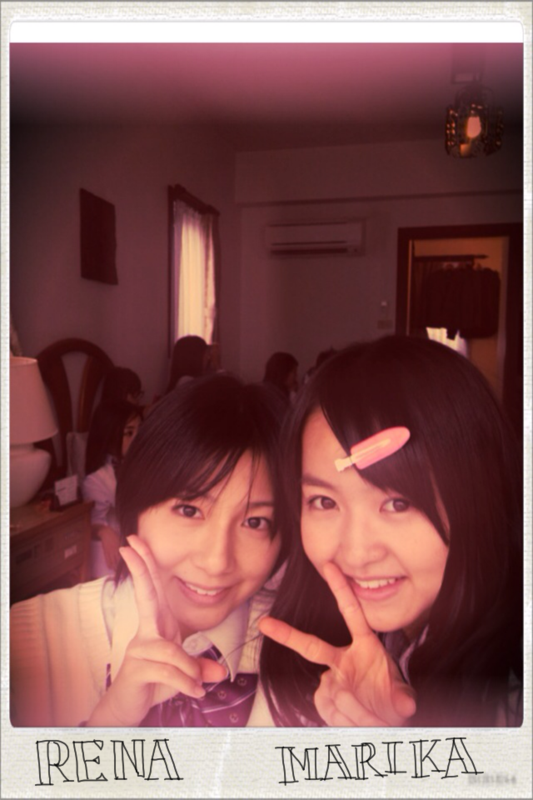

| 2011/12 29 Thu | 40回目*marika |
こんばんわ!!
いつも読んでくださってる方、
初めて読んでくださった方、
コメントしてくださった方、
ありがとうございます☆
.................................
・中学生のころの思い出話とか聞かせて！
私は3年生の時の思い出が強くて、
いつめんが本っ当に!めっちゃ楽しくって!!
毎日げらげら笑ってました。
行事であんまり泣くことはなかったのに
体育祭、合唱コンクールで
終わったあと沢山泣きました;)
沢山泣いた。熱かったです。
良い思い出*
・何ケーキが好きなの？
イチゴいっっぱいの♡
チーズケーキも好きです。
・でっかいもこもこのやつ、スリッパ？
前にひとめぼれして買ったスリッパです♡
あっ。ゴジラじゃないよ!!
オオカミ...だと思うよ!!←
・ワニと一緒に映ってるのって
ベビたんの家？
そうです^^*
リビング♪
・乃木どこのベビたんの謝らなきゃ
いけなかったことって、なに？
そこは.....
あえて言わない。笑
・まりりんはねねころに対しては
「同じ伊藤の名前…」
として何か思ったりしたのかな？
やっぱり、ずっと
オーディション一緒だったから
ねねをいちばん覚えてましたよ~!
本当に
「あっ。同じ名字....」
って笑
.....言わなくても、お互い戦ってました。←
・まりかちゃんもパックしたの？
昨日もパックした:D!!
プルンプルンでした=33
・ＡKB48系統に推しメンいたりしますか？
そこまで詳しくなかったので
推し...は、わからないです;(
・口笛って吹ける？
吹けます吹けます!!
・好きな海のスポーツ有る？
海...
水系は得意じゃないです><
・好きな風景は？
夕焼けのピンクのグラデーション＊
森の中。木とか葉っぱ
・やっぱり同じ年メンバーと仲が良いの？
そうですね!!
でもみんな仲良しですよ♡
・中学生メンバーとは遊んだりするの？
まだ遊んだことないなぁ...
でもじゃれます笑
・正月の予定は？
お仕事!!かな...
・お年玉で何買う？
どうしよっ
貯めようかなっ!!
でも、欲しいもの沢山あるわ~><
・初対面の人のどこを初めに見ます？
服装とか...
・ファッションセンスはお母さん譲りなの？
そうかも。
趣味とか好みがほとんど一緒ですもん:3!
・ティペットってなんでしょーか？
ああ、えっとですね...
付け襟の部分をファーにした
マフラーみたいな感じのやつです!!
(説明へたくそですみません...)
・大晦日は家族と過ごすのかな？
はい^^!!
・年が明ける瞬間何をするかな？
ケータイの画面見つめてるかな...!!
ここまでで!!
.................................
やっと返せました。
遅くなってすみません><
そういえば、もうちょとで
2011年が終わってしまうのか...:O!!
部屋の掃除しなきゃっ
思い出してみると
本当にいろいろなことが
沢山ありました。
どれもこれも
大切な思い出です＊
体調くずさんようにしなああぁ><
明日、お仕事あります*
がんばります^^

れな^^
今日もお疲れさまりか☆
みなさん、新年に向けて
一緒に頑張っていきましょう♪

LOVE
ベビたん*****bA by marika